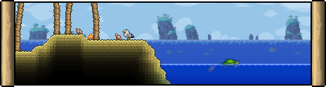

Ocean Biome

The Ocean is a biome found at both left and right edges of a world. It consists of a sandy beach and a large body of water that extends toward the end of the world, with Shell Piles being occasionally generated in clumps. Palm trees grow on the surface, and can be cut down for Palm Wood. Seashells and Starfish are found commonly on the surface and underwater, and can grow over time. Corals also grow on the seabed. Usually, there will also be several Water Chests generated on the seabed.
Enemies in the Ocean include Crabs, Pink Jellyfish, and Sharks. Squids and Sea Snails rarely appear underwater, and respectively drop Black Ink and Purple Mucus. Critters in the Ocean include Dolphins, Seagulls, Seahorses, and Sea Turtles.
Tips
- Players exploring the Ocean run the risk of drowning if not equipped with the proper accessories. In addition to plenty of healing potions, items and potions that aid breathing, such as the Breathing Reed and Gills Potion, a Magic Mirror for returning home quickly, and Flippers to aid swimming should be brought along. Hooks may also be of some help in returning to the surface for breath. The Neptune's Shell or any of its upgrades removes the need to breathe altogether.
- Another way of draining the Ocean is by making an air pocket, emptying a Lava Bucket in it and placing a background object (e.g. furniture) in the lava. Allowing water to flow in will cause it to disappear, as the object prevents Obsidian from being generated
- When attempting to preserve the Ocean biome from being infected in Hardmode, simply digging a horizontal gap under the seabed is insufficient because world data extends a little past the edge of the world. The gap must be created vertically along the beach of the Ocean to prevent the spread of Corruption/Crimson or Hallow.
- The Oceans have a lot of space, making them good places for large-scale builds like arenas and farms.
- While it is impossible to expand the Ocean biome further inland, the player may extend the watery area to the inner edge of the naturally spawning beach..
- Players may drain the Ocean by tunneling down to the Underworld, where water evaporates.